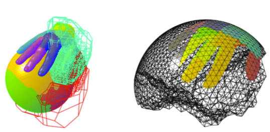

Variational Transfer Toolkit
Parallel variational resampling methods for exchanging discrete fields between unrelated meshes, enabling robust multiphysics coupling across scales.

Project Highlights
Selected research software, numerical methods, and community initiatives that showcase how variational transfer, fluid-structure interaction, and large-scale geophysics simulations translate into real-world impact.
Parallel variational resampling methods for exchanging discrete fields between unrelated meshes, enabling robust multiphysics coupling across scales.
Coupled finite element and high-order finite difference solvers that capture complex fluid-structure-contact interaction with immersed hyper-elastic solids.
Mixed-dimensional discretizations and software for fractured porous media, supporting geothermal reservoir forecasting and uncertainty analysis.
Tensor-product discretizations and semi-geometric multigrid solvers for 4D finite element simulations with adaptive mesh management.